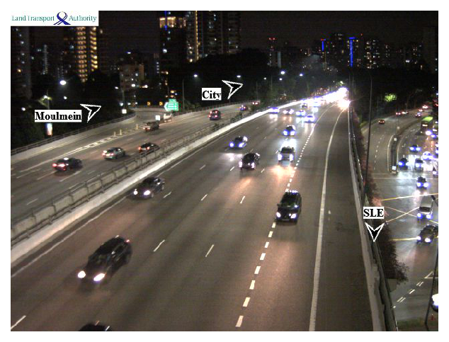

Singapore traffic camera
Monitor traffic in Singapore using DATA.GOV traffic camera api.
"""
Program: Singapore_traffic_camera
Version: 20190911
@author: Pranab Das (twitter: @pranab_das)
"""
import datetime
import pytz
import requests
import ast
import numpy as np
import urllib
import shutil
import matplotlib.pyplot as plt
%matplotlib inline
# Provide your location, or request from device's GPS api
my_latitude = 1.3236
my_longitude = 103.8587
# Get current date time for Singapore
tz = pytz.timezone('Asia/Singapore')
d = datetime.datetime.now(tz)
# Format DATA.GOV.SG API
api = 'https://api.data.gov.sg/v1/transport/traffic-images?date_time='+ \
d.strftime("%Y-%m-%d") + "T" + d.strftime("%H") + "%3A" + d.strftime("%M") + "%3A00"
# Read camera data from DATA.GOV.SG
camera_data = ast.literal_eval(requests.get(api).content.decode("utf-8"))["items"][0]["cameras"]
print("DATA.GOV.SG API System Status :", \
ast.literal_eval(requests.get(api).content.decode("utf-8"))['api_info']['status'], '!')
no_of_cameras = len(camera_data)
# Camera locations
location = []
for camera_id in np.arange(no_of_cameras):
location.append(camera_data[camera_id]['location'])
camera_latitudes = []
camera_longitudes = []
# Distance of cameras from your location
dist = []
for camera_id in np.arange(no_of_cameras):
camera_latitudes.append(location[camera_id]['latitude'])
camera_longitudes.append(location[camera_id]['longitude'])
dist.append(np.sqrt((camera_latitudes[camera_id]-my_latitude)**2 + \
(camera_longitudes[camera_id]-my_longitude)**2))
# Find the camera nearby to your location
for camera_id in np.arange(no_of_cameras):
if dist[camera_id] == min(dist):
my_camera_id = camera_id
print("Actual location of the camera nearby you: \nLatitude =", \
camera_latitudes[my_camera_id], ", Longitude = ", camera_longitudes[my_camera_id])
# Get camera image url
my_camera_url = camera_data[my_camera_id]["image"]
r = requests.get(my_camera_url, stream=True)
if r.status_code == 200:
with open("camera.jpg", 'wb') as f:
r.raw.decode_content = True
shutil.copyfileobj(r.raw, f)
print("This camera data last updated :", camera_data[my_camera_id]['timestamp'])
# Show image
image = plt.imread("camera.jpg")
plt.figure(dpi = 150)
plt.imshow(image)
plt.axis('off')
plt.show()
Output:
DATA.GOV.SG API System Status : healthy !
Actual location of the camera nearby you:
Latitude = 1.323604823 , Longitude = 103.8587802
This camera data last updated : 2019-09-15T21:38:53+08:00
